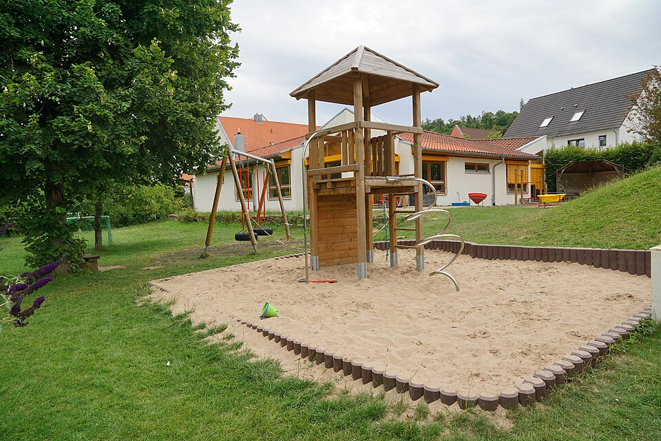
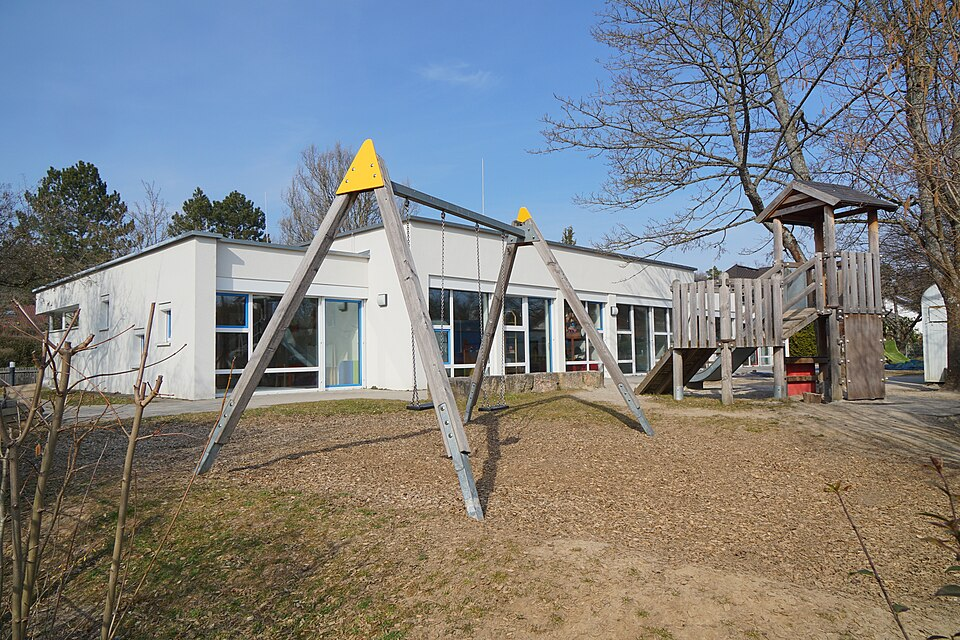

A classroom guide
走進小蝸牛
台中西屯 · 蒙特梭利幼兒園
風格預覽｜照片非本園實景，參觀與聯絡資訊為示範。

Field notes / 01
園所特色
參觀蒙特梭利教室，可以從三個地方看起：
- 教具怎麼放？孩子能不能自己選、自己收？
- 孩子專心操作時，老師如何在旁觀察？
- 桌椅、櫃子和走道，怎麼配合孩子的身高？

看園所日常
孩子們每天的活動影片，都放在我們的 Facebook 粉專。
到 Facebook 看園所日常來園參觀
- 電話MOCK
- 04-0000-0000（示範）
- 參觀時間MOCK
- 週一至週五 上午 10:00–11:30，請先用 LINE 或電話預約。
- 收托年齡與班別MOCK
- 2 歲至入小學前，分幼幼班、小班、中班、大班。
常見問題MOCK
幾歲可以入園？
2 歲至入小學前。
怎麼預約參觀？
請用 LINE 或電話預約，參觀時間為週一至週五上午 10:00–11:30。
園所在哪裡？
臺中市西屯區福林里福科路658巷9弄7號。
有哪些班別？
幼幼班、小班、中班、大班。
歡迎來參觀，看看孩子的一天
先加入 LINE，我們會回覆適合的參觀時間。MOCK
